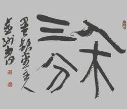
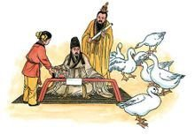
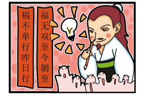

-
坦腹东床：书圣王羲之令人拍案叫绝的营销术
有一次，太尉郗鉴派门生来见王导，想在王家子弟中选位女婿。王导让来人到东边厢房里去看王家子弟。门生回去后，对郗鉴说:"王家子弟个个不错，可是一听到有信使来，都显得拘谨不自然，只有一个人坐在东床上，袒腹而食，若无其事。"郗鉴说:"这正是我要选的佳婿。"一打听，原来是王羲之。郗鉴就把女儿嫁给了他。王羲之悟透了人性：在潜意识里，人总希望自己聪明别人愚笨，并时不时地来点反向思维。这类缺憾营销，不按常理出牌，却常常出奇制胜。王羲之凭缺憾营销取得了完胜，不知网友诸君能否从中得到点启发？2018-6-19
-

入木三分
王羲之出身于魏晋名门琅玡王氏，他七岁就擅长书法。传说晋帝当时要到北郊去祭祀，让王羲之把祝词写在一块木板上，再派工人雕刻。刻字者把木板削了一层又一层，发现王羲之的书法墨迹一直印到木板里面去了。他削进三分深度才见底，木工惊叹王羲之的笔力雄劲，书法技艺炉火纯青，笔锋力度竟能入木三分。2018-6-19
-
竹扇题字
王羲之到一个村子去。有个老婆婆拎了一篮子六角形的竹扇在集上叫卖。那种竹扇很简陋，没有什么装饰，老婆婆十分着急。王羲之看到这情形，很同情那老婆婆，就上前跟她说：“你这竹扇上没画没字，当然卖不出去。我给你题上字，怎么样？” 老婆婆不认识王羲之，见他这样热心，也就把竹扇交给他写了。王羲之提起笔来，在每把扇面上龙飞凤舞地写了五个字，就还给老婆婆。老婆婆不识字，觉得他写得很潦草，很不高兴。王羲之安慰她说：“别急。你告诉买扇的人，说上面是王右军写的字.”王羲之一离开，老婆婆就照他的话做了。集上的人一看真是王右军的书法，都抢着买。一箩竹扇马上就卖完了。2018-6-19
-

书成换鹅
书圣王羲之很喜欢鹅，他认为养鹅不仅能陶冶情操，还能从观察鹅的动作形态中悟到一些书法理论。有一次王羲之出外游玩，看到一群很漂亮的白鹅，便想买下，一问之下知道这些鹅是附近一个道士养的，便找到那个道士想与他商量买下那群鹅，那个道士听说大名鼎鼎的王羲之要买，便说：只要王右军能为我抄一部《黄庭经》，便将拿些鹅送给他，王羲之欣然答应，这便成就了书成换白鹅的佳话。2018-6-19
-

巧补春联
大书法家王羲之每逢除夕都要亲手写春联贴之于门。因为他的字号称"天下第一行书"，很多人都想得其字而又难得。所以每年除夕他的春联一贴出，不到半夜，就被人偷偷揭走。这一年，除夕又至，王羲之照旧写了"福无双至，祸不单行"八个字的春联，留下了下半截。想偷对联的人一看此八个字太不吉利，便扫兴而归。到了寅时，王羲之补了后半截，变成了"福无双至今朝至，祸不单行昨夜行。"第二天一大早，想偷春联的人见春联变了样，皆赞叹不已，拍手叫绝。2018-6-19